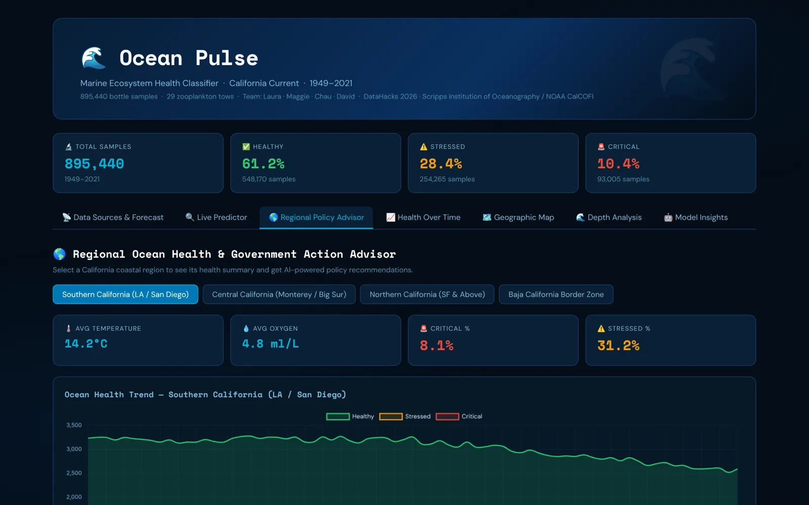
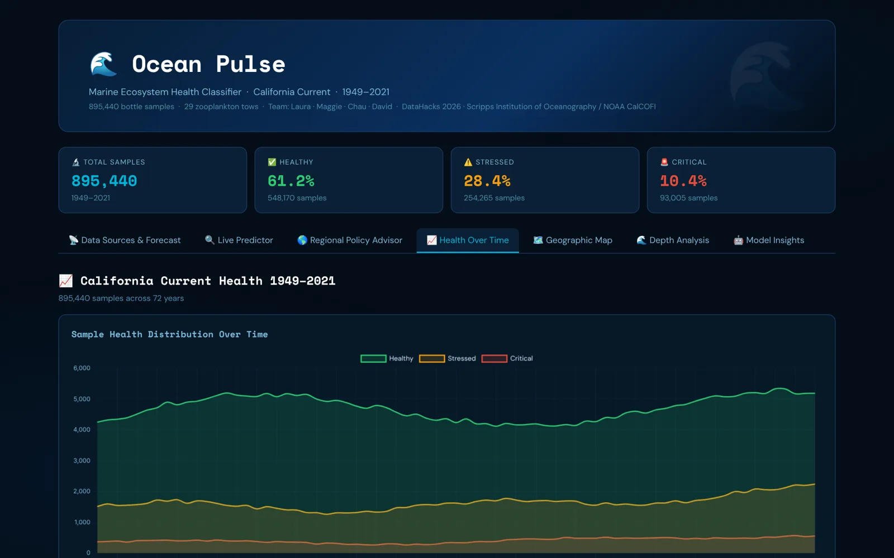
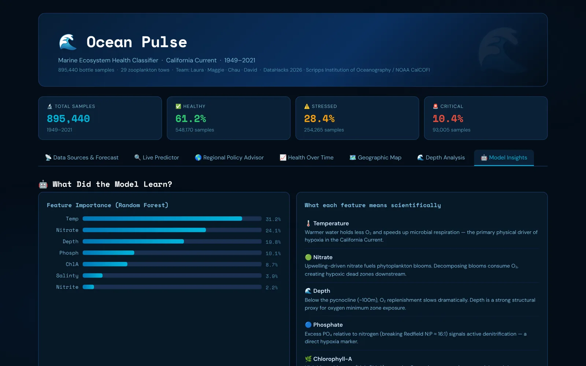
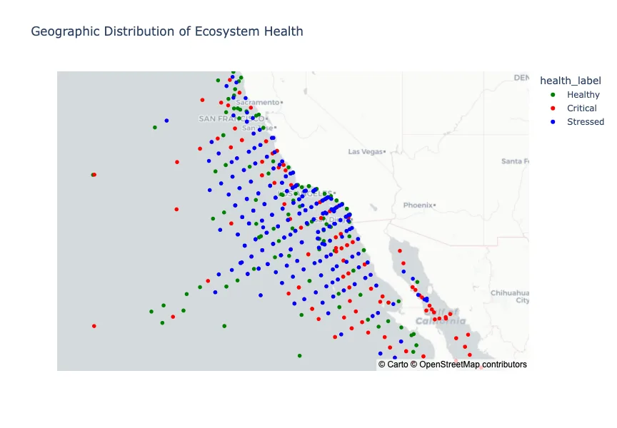

01 · The problem
98% accuracy, and nobody cared
We had 70 years of CalCOFI ocean data and a Random Forest model that hit 98% accuracy predicting ecosystem health. Honestly, that wasn't the hard part. Anyone on the team could have built that model alone.
What we kept running into was that nobody who'd actually use this thing cares about model accuracy. A policymaker isn't going to read our confusion matrix. If they can't figure out what the dashboard is telling them in the first ten seconds, it doesn't matter how good the model is underneath.
02 · Who it's for
Not us
Not us, and not other data science students. We had to keep reminding ourselves of that. The actual user is someone with zero ML background (a policymaker, a science communicator, maybe a curious local) who needs to look at the screen and know, fast, whether a region's ecosystem is doing okay, and trust that answer enough to act on it.

03 · What we changed
Three changes, and why
Tabs in the order we built the pipeline: raw data, then the model, then predictions last. Made sense to us, made zero sense to anyone testing it.
"Is this region healthy right now?" comes first. Methodology moved further back for people who want to dig in.
A health score by itself, just a number floating there.
A Groq model translates the prediction into plain language about what it might mean for regional policy. It closes the gap between "here's a score" and "here's why you should care."
You could click literally anywhere on the map. Felt cool in the demo, but it was kind of dishonest.
Scoped to the government-regulated zones where ocean policy actually gets made. Less flashy, more true to how it would be used.



04 · Reflection
What I'd do differently
None of us had the vocabulary for "user-centered design" while we were building this. We just kept saying the dashboard "felt off" until something clicked. Looking back, I wish we'd shown the tab layout to one non-technical person before writing any code, instead of building first and rearranging things at 3am once we noticed the problem ourselves.